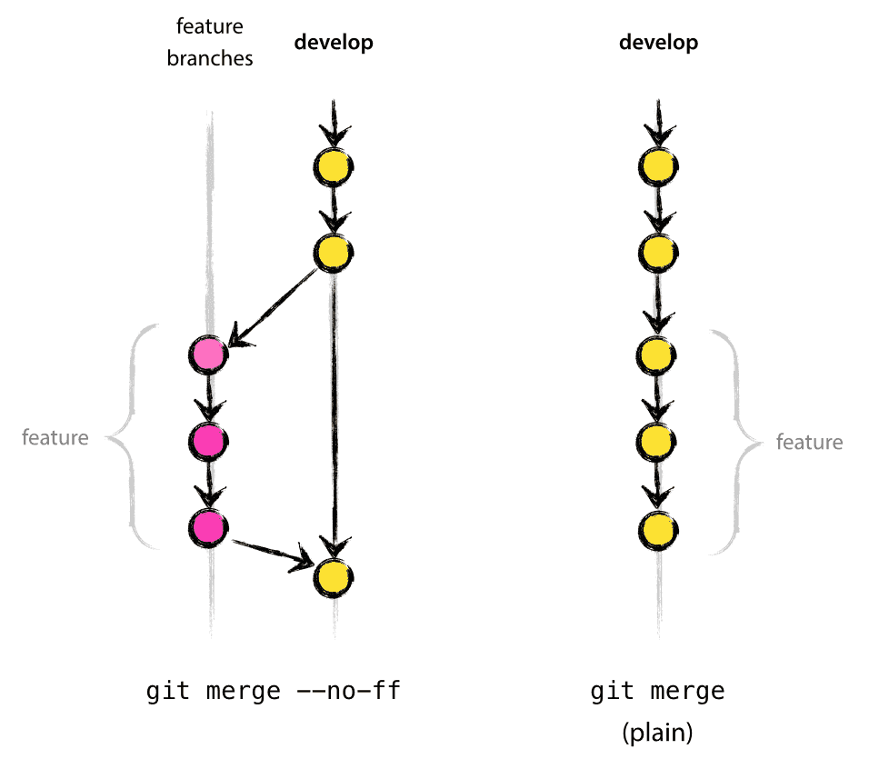

Git Workflow
jekyll 을 사용해서 블로그를 자동빌드하는 시스템이 있다는 것은 알고 있었는데, 문득 Github 쪽에서 하드코딩했을리는 없다라는 생각이 들었다.
그리고 그 추측이 맞았다는 것을 알게 되었다.
[관련자료] ]( https://jekyllrb.com/docs/continuous-integration/github-actions/)
따라서 Action 을 이야기하기 전에 먼저 workflow 에 대해서 알아보도록 하자.
Github workflow
Git branching model 이라는 것을 먼저 살펴보면,
main branches
저장소에는 두개의 핵심적인 브랜치가 있다.
* master
* develop
origin/master는 배포 가능한 상태를 유지하는 브랜치이다
origin/develop 은 최신 개발피쳐들이 통합되어 있는 브랜치이다. 데일리 빌드는 이 브랜치에서 동작한다

develop 브랜치의 소스코드가 안정화되고 릴리스가 가능하다면 모든 변경사항은 master 브랜치로 머지되고 해당 릴리스번호가 태그된다.
따라서 변경사항이 master 에 병합될때마다, 새로운 릴리스가 만들어지게 되는데, 이 작업은 매우 엄격하고 규칙에 기반해서 이루어져야 한다. 이것은 Git hook 스크립트를 사용해서 자동으로 진행하는 것이 가능하다.
supporting branches
master 와 develop 이외에, 개발에 필요한 여러가지 서포팅 브랜치가 있다. 이들은 팀원간에 협업을 돕고, 피쳐관리를 쉽게 하도록 해준다. 결과적으로 릴리스를 준비하고, 라이브중 문제를 빠르게 고칠수 있게 해준다. 메인 브랜치와는 다르게, 이들은 해당 작업이 종료되면 사라지게 된다.
* feature branches
* release branches
* hotfix branches
각각은 특별한 목적과 규칙에 의해서 관리된다. 이 부분에 대해서 좀 더 자세하게 알아보도록 하자.
Feature branches
분기가 일어나는 브랜치 : develop
머지가 일어나는 브랜치 : develop
브랜치 네이밍 컨벤션 : 예외가 아닌 것은 모두가능, 예외 : master , develop , release- , hotfix-
feature 브랜치는 새로운 기능을 개발하기 위해 사용된다. 피쳐는 개발중인 동안에는 별도의 브랜치로 남아있게 된다. 이 피쳐가 이후 릴리스에 포함되게 되면 develop 브랜치로 병합이 된다. 혹은 좋지 않은 결과라면 피쳐는 그대로 사라지게 된다.
feature 브랜치는 일반적으로 origin에는 없고, 개발자의 저장소에만 존재하게 된다.
feature 브랜치 생성
$ git checkout -b myfeature develop
Switched to a new branch "myfeature"
feature 브랜치를 develop 에 머지
$ git checkout develop
Switched to branch 'develop'
$ git merge --no-ff myfeature
Updating ea1b82a..05e9557
(Summary of changes)
$ git branch -d myfeature
Deleted branch myfeature (was 05e9557).
$ git push origin develop
--no-ff 플래그는 fast-forward 를 하지 않고 무조건 머지커밋을 만들라는 옵션이다. 둘의 차이는 아래와 같다

fast-forward 머지시점에서 머지 대상이 되는 메인 브랜치에 다른 변경점이 없으면 모든 커밋을 메인 브랜치의 커밋으로 변환하는 것을 말한다
물론 이렇게 하면 비어있는(아무런 변경점도 없는) 머지커밋이 만들어 질수도 있지만, 피쳐에 대한 히스토리를 유지할 수 있게 되어서 실보다 득이 더 크다.
Release branches
분기가 일어나는 브랜치 : develop
머지가 일어나는 브랜치 : master, develop
브랜치 네이밍 컨벤션 : release-*
릴리즈브랜치는 새로운 프러덕션을 위한 브랜치이다. 그전에 모든 피쳐는 develop 브랜치에 다 병합되어 있어야 한다. 새로운 release 브랜치가 만들어지기 전까지는 develop 에서 릴리스프로덕션을 기다리는 형태이어야 한다.
새로운 릴리스브랜치가 시작되는 순간 버전넘버를 받게 된다 (이보다 빨라서는 안된다). 사실상 develop 브랜치가 모든 다음 릴리스의 내용을 반영하고 있어야 한다. 하지만 다음 릴리스브랜치가 시작되기전에는 버전 0.3 일지 1.0일지는 알 수 없다. 버전넘버는 프로젝트에 정해진 규칙에 의해서 결정되는데 오직 릴리스브랜치가 시작되는 시점에서만 알수있기 때문이다.
Release branch 생성
릴리스 브랜치는 develop 에서 생성된다. 예를 들어 현재버전이 1.1.5 이고 다음번에 큰 업데이트가 이루어진다고 하면, 다음 릴리스브랜치의 버전은 1.2 가 된다. 이에 따라 우리는 릴리스브랜치의 이름과 버전넘버에 이것을 반영하도록 한다
$ git checkout -b release-1.2 develop
Switched to a new branch "release-1.2"
$ ./bump-version.sh 1.2
Files modified successfully, version bumped to 1.2.
$ git commit -a -m "Bumped version number to 1.2"
[release-1.2 74d9424] Bumped version number to 1.2
1 files changed, 1 insertions(+), 1 deletions(-)
새로운 버전이 만들어지면 버전넘버를 올리게된다. bump-version.sh 는 가상의 쉘스크립트로 새로운 버전을 특정 파일에 기록하는 기능을 수행한다. 그 이후에 새로운 버전을 커밋한다.
새로운 브랜치는 릴리스전까지 존재하게 되며, 이동안 버그픽스는 이 브랜치에 이루어진다 (develop 대신에 이쪽에 작업한다). 큰 규모의 기능 추가는 금지되어 있으면 이런 종류의 것은 develop 에 머지되어야 하며 다음 release 를 기다려야 한다.
release branch 종료
릴리스 브랜치가 실제 릴리스가 될 준비가 되면, 몇가지 작업이 필요해진다. 첫번째로, 릴리스 브랜치는 master 에 병합되어야 한다 (따라서 master 에 적용되는 모든 커밋은 release 이어야 한다). 다음으로 master 에 이루어지는 commit 에 태그를 달아준다. 마지막으로 릴리스브랜치를 develop 으로 병합해야 한다.(이후 릴리스에 버그 픽스를 적용하기 위해 필요하다)
Git 에서 처음 두 단계
$ git checkout master
Switched to branch 'master'
$ git merge --no-ff release-1.2
Merge made by recursive.
(Summary of changes)
$ git tag -a 1.2
다시 develop 에 병합하는 과정
$ git checkout develop
Switched to branch 'develop'
$ git merge --no-ff release-1.2
Merge made by recursive.
(Summary of changes)
마지막으로 릴리스브랜치를 제거한다
$ git branch -d release-1.2
Deleted branch release-1.2 (was ff452fe).
Hotfix branches
분기가 일어나는 브랜치 : master
머지가 일어나는 브랜치 : master, develop
브랜치 네이밍 컨벤션 : hotfix-*
핫픽스 브랜치는 릴리스브랜치와 매우 비슷하지만, 계획된 작업이 아니라는 점이 다르다. 핫픽스는 라이브에 문제가 생겨서 긴급하게 필요할때 이루어진다. 핫픽스는 master 에서 브랜치의 해당하는 문제가 발생한 태그에서 브랜치를 생성하게 된다.

이 방식의 핵심은 핫픽스가 이루어지는 동안에 , 대부분의 팀원들은 작업을 원래대로 진행할수 있다는 점이다.
hotfix 브랜치 생성
핫픽스 브랜치는 master 로부터 생성된다. 예를 들어, 버전1.2 에서 라이브에 문제가 발생고 있다고 하자. 하지만 develop 은 현재 개발중 상황으로 불안정하다. 이런 상황에서 hotfix 브랜치를 작성하여 문제를 해결해야 한다.
$ git checkout -b hotfix-1.2.1 master
Switched to a new branch "hotfix-1.2.1"
$ ./bump-version.sh 1.2.1
Files modified successfully, version bumped to 1.2.1.
$ git commit -a -m "Bumped version number to 1.2.1"
[hotfix-1.2.1 41e61bb] Bumped version number to 1.2.1
1 files changed, 1 insertions(+), 1 deletions(-)
버전 넘버를 바꾸는 것을 잊으면 안된다!
그리고 나서 버그를 고치고 커밋을 한다
$ git commit -m "Fixed severe production problem"
[hotfix-1.2.1 abbe5d6] Fixed severe production problem
5 files changed, 32 insertions(+), 17 deletions(-)
hotfix 브랜치 종료
버그픽스가 종료되면, 다시 master 와 develop 모두에 병합해야 한다. 이작업은 새로운 릴리스 브랜치가 종료될때와 유사하다
master 에 병합
$ git checkout master
Switched to branch 'master'
$ git merge --no-ff hotfix-1.2.1
Merge made by recursive.
(Summary of changes)
$ git tag -a 1.2.1
develop 에 병합
$ git checkout develop
Switched to branch 'develop'
$ git merge --no-ff hotfix-1.2.1
Merge made by recursive.
(Summary of changes)
특수한 경우가 있는데, 만약에 새로운 release 브랜치가 준비중이라면, 핫픽스는 해당 develop 대신에 release 브랜치에 병합되어야 한다 .
마지막으로 브랜치를 제거한다
$ git branch -d hotfix-1.2.1
Deleted branch hotfix-1.2.1 (was abbe5d6).